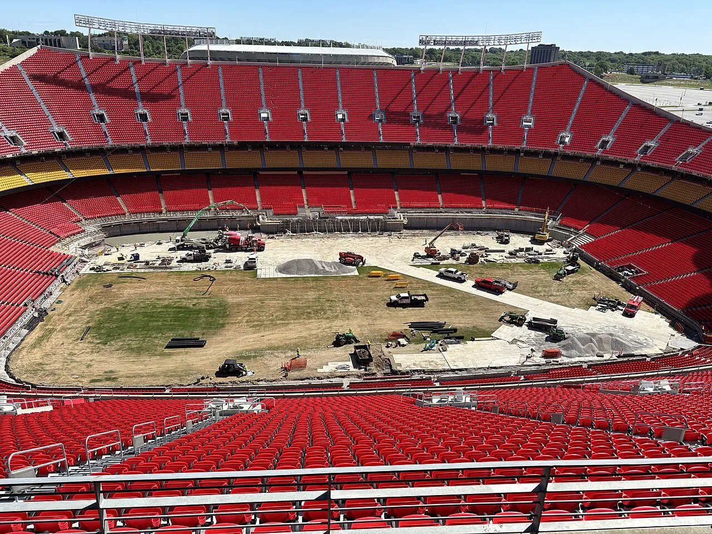

더위는 경기 시간표를 바꿉니다

2026 월드컵은 규모만 커진 대회가 아닙니다. 개최 도시가 넓고 기후 조건도 다양합니다. 같은 여름이라도 도시별 습도, 일사량, 경기장 지붕 구조가 다릅니다. 선수에게 더위는 단순히 불편한 환경이 아니라 스프린트 횟수, 의사결정 속도, 부상 위험을 바꾸는 변수입니다.
FIFA가 수분 보충 휴식을 적용하는 것은 필요한 조치입니다. 그러나 전·후반 3분 휴식만으로 선수 보호가 끝나지는 않습니다. 경기 전 워밍업 시간, 훈련 시간대, 라커룸 냉방, 의료진의 열 스트레스 판단, 교체 전략이 함께 움직여야 합니다. 더위 관리는 경기 중 물을 마시는 장면보다 경기 전후 운영에서 더 많이 결정됩니다.
이동 거리는 보이지 않는 피로입니다
북중미 월드컵의 또 다른 부담은 이동입니다. 국경과 시간대를 넘는 이동은 선수의 수면과 회복 리듬을 흔듭니다. 경기에서 뛴 90분보다 비행, 입국 절차, 훈련장 이동, 미디어 일정이 더 피로를 쌓을 수 있습니다. 대회가 길어질수록 강팀과 약팀의 차이는 전술보다 회복 인프라에서 벌어질 가능성이 있습니다.
팀은 경기장 근처 숙소, 훈련장 잔디 상태, 수면 관리, 냉각 장비, 영양 보급을 세밀하게 준비해야 합니다. 선수단 규모가 커도 회복 시스템이 약하면 후반전에 움직임이 줄어듭니다. 팬은 경기력만 보지만, 감독은 이동표와 체온표를 같이 봅니다. 월드컵의 더위는 기온계보다 일정표에서 먼저 읽힙니다.
전술은 체력 예산 안에서 짜입니다
폭염과 이동 피로가 커지면 전술도 달라집니다. 높은 압박을 90분 내내 유지하기 어렵고, 짧은 패스보다 긴 전환으로 체력 소모를 줄이는 선택이 늘 수 있습니다. 선수 교체 타이밍도 빨라질 수 있습니다. 더운 경기에서는 최고의 전술이 가장 화려한 전술이 아니라 체력 예산을 끝까지 남기는 전술일 때가 많습니다.
벤치 깊이가 중요한 이유도 여기에 있습니다. 주전 11명이 강한 팀보다 16명 이상을 안정적으로 돌릴 수 있는 팀이 토너먼트에서 버틸 가능성이 큽니다. 특히 측면 선수와 미드필더는 더위에 영향을 크게 받습니다. 한 경기의 승리보다 다음 경기까지 남길 에너지를 계산해야 합니다.
팬 안전도 경기 운영의 일부입니다
폭염 관리는 선수만의 문제가 아닙니다. 경기장 밖에서 오래 줄을 서는 팬, 대중교통을 갈아타는 원정 팬, 낮 시간 팬페스트에 모이는 관중도 보호 대상입니다. 그늘, 물, 응급의료, 안내 표지, 입장 동선이 충분하지 않으면 대회 경험은 쉽게 나빠집니다. 스마트 경기장보다 기본적인 열 관리가 먼저입니다.
2026 월드컵은 거대한 스포츠 이벤트이자 도시 운영 시험대입니다. 수분 보충 휴식은 눈에 보이는 변화지만, 진짜 성패는 보이지 않는 회복 설계에서 갈립니다. 선수와 팬이 무사히 이동하고, 쉬고, 다시 경기장으로 돌아올 수 있어야 경기력도 흥행도 유지됩니다.
더위는 경기장 밖에서 먼저 쌓입니다
폭염 속 축구는 전후반 몇 분의 휴식만으로 해결되지 않습니다. 선수는 경기 전 이동, 훈련장 온도, 숙소 냉방, 회복식, 수면의 영향을 함께 받습니다. 낮 경기를 치른 뒤 장거리 이동을 하면 몸이 회복하기 전에 다음 훈련을 맞게 됩니다. 더위 관리는 경기 중 물을 마시는 문제보다 일정 관리에 가깝습니다.
수분 보충도 개인별로 달라야 합니다. 같은 날씨에서 뛰어도 땀 배출량과 염분 손실이 다릅니다. 어떤 선수는 물만 마시면 오히려 몸이 무거워지고, 어떤 선수는 전해질을 충분히 보충해야 근육 경련을 줄일 수 있습니다. 대표팀은 경기 전에 선수별 땀 검사와 체중 변화를 바탕으로 보충 계획을 세워야 합니다.
전술에도 영향이 있습니다. 강한 압박을 오래 유지하려면 체온 상승을 견뎌야 합니다. 더운 경기에서는 전방 압박을 계속하기보다 특정 구간에 몰아서 쓰고, 볼을 소유하며 호흡을 고르는 시간이 필요합니다. 교체 카드도 체력 저하 이후가 아니라 체온이 오르기 전에 쓰는 쪽이 더 효과적일 수 있습니다.
관중과 운영 인력의 안전도 중요합니다. 경기장 주변 대기 줄, 교통 정체, 음료 반입 규정, 그늘 시설이 충분하지 않으면 관중 위험이 커집니다. 월드컵은 선수만의 행사가 아니기 때문에 도시 전체의 폭염 대응 능력이 대회 품질을 좌우합니다. 경기장 안의 휴식 규정만으로는 부족합니다.
결국 폭염 대회에서 강한 팀은 체력만 좋은 팀이 아닙니다. 일정, 회복, 전술, 의료 대응, 관중 운영을 함께 준비한 팀입니다. 날씨는 모두에게 같지만 준비의 깊이는 다릅니다. 승부는 후반 80분의 스프린트에서 보이지만, 그 장면은 며칠 전부터 쌓인 회복 설계에서 만들어집니다.
관련 영상
북중미 월드컵, 수분 공급 휴식 적용…전·후반 3분씩 / 연합뉴스TV
월드컵의 폭염 대응은 물 마시는 3분으로 끝나지 않습니다. 이동, 수면, 훈련, 교체, 관중 동선까지 연결된 회복 시스템이 대회 수준을 결정합니다.
폭염 월드컵에서 승부는 기술과 체력만의 문제가 아닙니다. 선수단이 이동 동선, 훈련 시간, 냉각 장비, 수분 보충, 교체 전략을 얼마나 세밀하게 준비했는지가 후반 경기력으로 나타납니다. 팬들도 마찬가지입니다. 경기장 접근, 대기 공간, 음료 구매, 응급 대응이 충분하지 않으면 대회 경험은 쉽게 나빠집니다. 폭염 대책은 규정 한 줄이 아니라 도시 운영 능력입니다. 더운 날씨가 반복될수록 국제대회는 경기장 안팎의 회복 설계를 경쟁력으로 삼게 됩니다.
선수 보호 규정은 경기의 흐름을 방해하는 장치가 아니라 경기력을 오래 유지하기 위한 기본 조건입니다. 휴식 시간이 생기면 감독은 전술 지시를 더 할 수 있고, 상대의 흐름을 끊는 변수도 생깁니다. 더위 대책은 스포츠 의학뿐 아니라 경기 운영 전략이 됩니다. 어떤 팀은 이를 리듬 조절 기회로 쓰고, 어떤 팀은 집중력을 잃을 수 있습니다. 폭염은 모두에게 같은 조건이지만 해석과 준비는 팀마다 다릅니다.
무더운 대회에서 좋은 준비는 눈에 잘 띄지 않습니다. 그러나 후반에 발이 무뎌지는 순간, 보이지 않던 회복 계획의 차이는 가장 선명한 경기력 차이로 나타납니다.
특히 교체 명단의 활용 폭이 넓은 팀은 더운 경기에서 유리할 수 있습니다. 선발 11명만 강한 팀보다 후반에 들어와 같은 강도로 뛰는 선수가 많은 팀이 체온 부담을 나눠 가질 수 있습니다. 스포츠 과학팀의 데이터와 감독의 결단이 같은 방향을 볼 때 폭염은 약점이 아니라 준비된 팀의 우위가 됩니다.